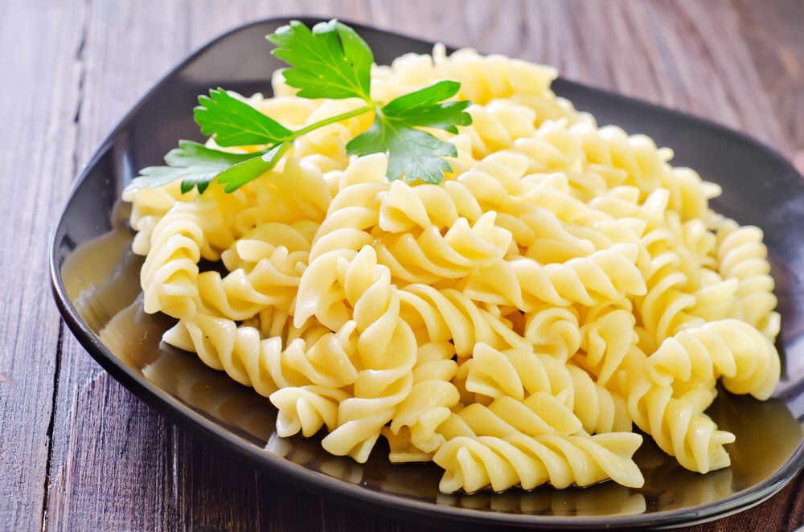

Description
Pasta is a type of food typically made from an unleavened dough of wheat flour mixed with water or eggs,
and formed into sheets or other shapes, then cooked by boiling or baking.
Ingredients
- 8 ounces dry pasta
- 3 tablespoons olive oil
Steps
- Bring a large pot of lightly salted water to a boil.
Add pasta and cook for 5 to 7 minutes or until still slightly less than al dente; drain.
Rinse with cold water. Toss with olive oil. Cover and refrigerate until ready to use.
To reheat, bring a large pot of water to a boil, add pasta and cook until hot, 1 to 2 minutes.